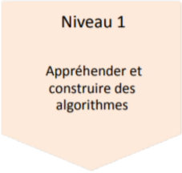

Optimiser des applications informatiques
Apprentissage Critique

- Analyser un problème avec méthode (découpage en éléments algorithmiques simples, structure de données...).
- Comparer des algorithmes pour des problèmes classiques (tris simples, recherche...).
- Expérimenter la notion de compilation et les représentations bas niveau des données.
- Formaliser et mettre en œuvre des outils mathématiques pour l’informatique.
Evaluation
Optimiser des applications informatiques
| Ressource | R1.01 | R1.02 | R1.03 | R1.04 | R1.05 | R1.06 | R1.07 | R1.08 | R1.09 | R1.10 | R1.11 | R1.12 |
|---|---|---|---|---|---|---|---|---|---|---|---|---|
| Coefficient | 24 | ∅ | 3 | 3 | ∅ | 15 | 15 | ∅ | ∅ | 6 | ∅ | ∅ |
SAE
S1.02 Comparaison d'approches algorithmiques
En partant d'un besoin exprimé par un client, il faut réaliser une implémentation, comparer plusieurs approches pour la résolution d'un problème et effectuer des mesures de performance simples. Cette SAE permet une première réflexion autour des stratégies algorithmiques pour résoudre un même problème.
Ressources
R1.01
Initiation au développement
Compétence 1
- Implémenter des conceptions simples.
- Élaborer des conceptions simples .
- Faire des essais et évaluer leurs résultats en regard des spécifications.
Compétence 2
- Analyser un problème avec méthode
R1.02
Développement d'interfaces web
Compétence 1
- Développer des interfaces utilisateurs.
Compétence 5
- Appréhender des besoins du client et de l'utilisateur
Compétence 6
- Appréhender l'écosystème numérique
R1.03
Introduction à l'architecture des ordinateurs
Compétence 2
- Analyser un problème avec méthode.
Compétence 3
- Identifier les différents composants d'un système numérique
R1.04
Introduction aux systèmes d'exploitation et à leurs fonctionnement
Compétence 2
- Expérimenter la notion de compilation et les représentations bas niveau des données.
Compétence 3
- Utiliser les fonctionnalitées de base d'un système multitâches/multiutilisateurs
- Installer et configurer un sytème d'exploitation et des outils de développement
R1.05
Introduction aux bases de données et SQL
Compétence 4
- Mettre à jour et interroger une base de données relationnelle.
- Concevoir une base de données relationnelle à partir d'un cahier des charges
R1.06
Mathématiques discrètes
Compétence 2
- Formaliser et mettre en oeuvre des outils mathématiques pour l'informatique.
Compétence 4
- Mettre à jour et interroger une base de données relationnelle.
R1.07
Outils mathématiques fondamentaux
Compétence 2
- Formaliser et mettre en oeuvre des outils mathématiques pour l'informatique.
R1.08
Gestion de projet et des organisations
Compétence 5
- Appréhender les besoins du client et de l'utilisateur.
Compétence 6
- Appréhender l'écosystème numérique.
R1.09
Economie durable et numérique
Compétence 4
- Mettre à jour et interroger une base de données relationnelle.
Compétence 6
- Appréhender l'écosystème numérique.
R1.10
Anglais technique
Compétence 1
- Faire des essais et évaluer leurs résultats en regard des spécifications.
- Développer des interfaces utilisateurs
Compétence 3
- Identifier les différents composants d'un système numérique.
Compétence 6
- Acquérir les compétences interpersonnelles pour travailler en équipe.
R1.11
Bases de communication
Compétence 3
- Configurer un poste de travail dans un réseau d'entreprise.
Compétence 5
- Appréhender les besoins du client et de l'utilisateur.
- Identifier les acteurs et les différentes phases d'un cycle de développement
Compétence 6
- Appréhender l'écosystème numérique.
- Acquérir les compétences interpersonnelles pour traviller en équipe
R1.12
Projet professionnel et personnel
Compétence 6
- Acquérir les compétences interpersonnelles pour traviller en équipe.